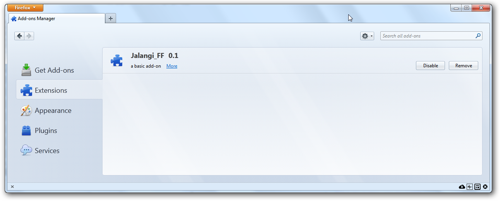
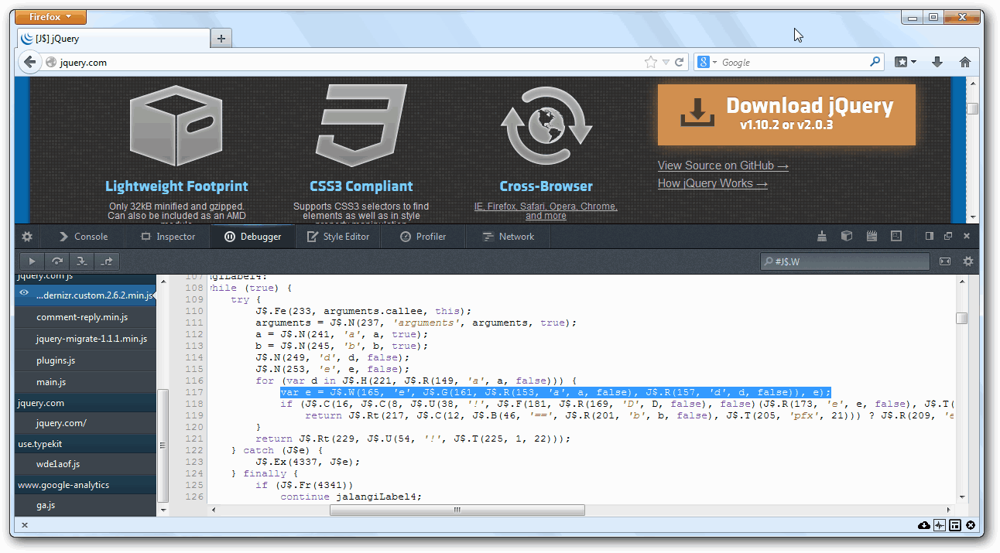
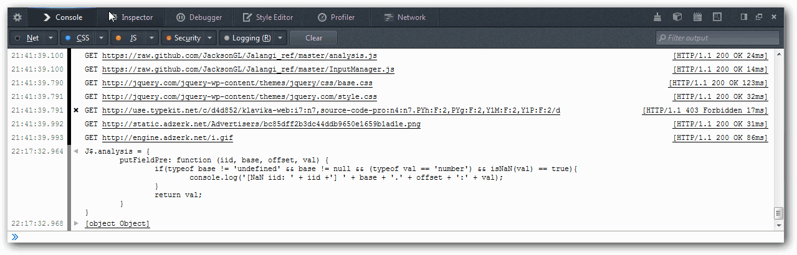
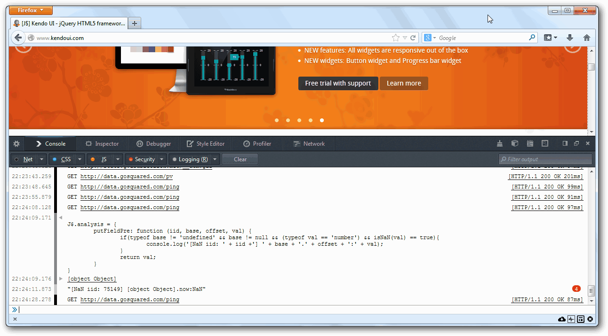

Jalangi is a Dynamic Analysis Framework for both front-end and back-end JavaScript. It allows you to monitor every operation of a JavaScript program and write your own program analysis code.
Jalangi Firefox extension intercepts and transforms every line of JavaScript code in the webpage and external files. The code transformation adds hooks that allows you to monitor almost every operation (e.g., variable read/write, unary/binary operation, function/method call, etc.) performed by the execution. Simply overriding the API exposed allows you to perform your own dynamic analysis. Your dynamic analysis code will be executed side-by-side with the target program's execution.
JavaScript is a loosely typed language which is often error-prune. Based on this framework, you can quickly build a analysis module to check different kinds of correctness bugs and performance bugs, doing various program analysis (e.g., debugging, Performance analysis, Monitoring dynamic behaviours, Record and replay, runtime call graph etc.)
Jalangi Firefox extension intercepts and transforms every line of JavaScript code loaded by the browser to expose hooks to facilitate program analysis.
The figure on the right-hand side shows the original code snippet and transformed code snippet. Function J$.W and J$.R are callback functions (i.e., hooks) for notifying the read and write operation of variables, the parameters of the callback function include the variable name and value. Similarly callback function. Those callback functions invoke specially designed dummy functions which will be exposed as API to facilitate user-defined dynamic analysis. Overriding those API functions will allow analysis code to be executed along the original execution.
Different from server-side JavaScript (Node.js), in a web browser, a JavaScript statement can be added at any time in various ways (as shown on the left). Our Firefox Extension handles all those possibilities and we are confident that every line of JavaScript code in a web page has been intercepted and transformed. Moreover, our extension also work well with web pages that use HTML5 webworker which is multi-threading API for front-end JavaScript. See more about this extension here.
To quickly prototype and test a dynamic analysis, use the interactive demo page.
To install Jalangi on your local machine (Mac OS or Linux is recommended), please visit the project's GitHub repository.
More detailed Documentation of each Jalangi API is available here.
To use Jalangi on Node.js with command line, please read the document here.
To use Jalangi2, see Jalangi2 API.
| API | Description |
|---|---|
| invokeFun(iid, f, base, args, val, isConstructor) | callback when invoking a function or method |
| getFieldPre(iid, base, offset) | callback before getting field of an object |
| getField(iid, base, offset, val); | callback when getting field of an object, need return value val |
| putFieldPre(iid, base, offset, val) | callback before putting field of an object, need return value val |
| putField(iid, base, offset, val) | callback when putting field of an object, need return value val |
| return_(ret) | callback when returning function without a return value, need return value ret |
| return_Rt(iid, val) | callback when returning function with a return value, need return value val |
| scriptEnter(iid, val) | callback when entering a script file |
| scriptExit(iid) | callback when exitting a script file |
| literalPre(iid, val) | callback before creating a literal object |
| literal(iid, val) | callback when creating a literal object |
| readPre(iid, name, val, isGlobal) | callback before before reading a variable |
| read(iid, name, val, isGlobal) | callback when reading a variable, need return value val |
| writePre(iid, name, val, lhs) | callback before writing a variable |
| write(iid, name, val, lhs) | callback when writing a variable |
| declare(iid, name, val, isArgumentSync) | callback when declaring a variable |
| binaryPre(iid, op, left, right) | callback before doing a binary operation |
| binary(iid, op, left, right, result_c) | callback when doing a binary operating, need return value result_c |
| unaryPre(iid, op, left) | callback before doing a unary operation |
| unary(iid, op, left, result_c) | callback when doing a unary operation, need return value result_c |
| conditionalPre(iid, left) | callback before evaluating a conditional statement |
| conditional(iid, left, ret) | callback when evaluating a conditional statement |
Liang Gong, Michael Pradel, and Koushik Sen, "JITProf: Pinpointing JIT-unfriendly JavaScript Code", FSE, 2015 (To Appear). preprint | technical report
Koushik Sen, George Necula, Liang Gong, and Wontae Choi, "MultiSE: Multi-path Symbolic Execution Using Value Summaries", FSE 2015 (To Appear). pdf | slides
Liang Gong, Michael Pradel, Manu Sridharan, and Koushik Sen, "DLint: Dynamically Checking Bad Coding Practices in JavaScript", ISSTA. 2015. pdf | slides
Michael Pradel, and Koushik Sen, "The Good, the Bad, and the Ugly: An Empirical Study of Implicit Type Conversions in JavaScript", ECOOP, 2015.
Michael Pradel, Parker Schuh, and Koushik Sen, "TypeDevil: Dynamic Type Inconsistency Analysis for JavaScript", ICSE, 2015. pdf
Michael Pradel, Parker Schuh, George Necula, and Koushik Sen, "EventBreak: Analyzing the Responsiveness of User Interfaces through Performance-Guided Test Generation", OOPSLA 2015. pdf
Koushik Sen, Swaroop Kalasapur, Tasneem Brutch, and Simon Gibbs, "Jalangi: A Selective Record-Replay and Dynamic Analysis Framework for JavaScript," in Proc. 9th joint meeting of the European Software Engineering Conference and the ACM SIGSOFT Symposium on the Foundations of Software Engineering (ESEC/FSE'13), 2013. pdf
Koushik Sen, Swaroop Kalasapur, Tasneem Brutch, and Simon Gibbs, "Jalangi: A Tool Framework for Concolic Testing, Selective Record-Replay, and Dynamic Analysis of JavaScript," in Proc. 9th joint meeting of the European Software Engineering Conference and the ACM SIGSOFT Symposium on the Foundations of Software Engineering (ESEC/FSE'13), 2013. (Tool Paper) pdf
Source code of Jalangi are available at the Github Repository.
To install the tool, install Mozilla Firefox and then download the XPI package.
Note: A recent change in Firefox API breaks the firefox extension, use this firefox extension with Firefox 33 or ealier.
Remember to disable the automatic update.
Another option is using DLint which includes a modified version of Firefox to do instrumentation before JavaScript code is compiled in the SpiderMonkey engine.
Drag the XPI file into Firefox Addon Manager.
Now you are good to go!
In most JavaScript engines, generating a NaN error does not raise an exception, sometimes this kind of bugs can be subtle and hard to diagnose. Based on Jalangi analysis framework, this tutorial shows how to write a analysis module that detects NaN (Not a Number) bugs.
A Simple NaN error check module:
J$.analysis = {
putFieldPre: function (iid, base, offset, val) {
if(typeof base != 'undefined' && base != null && (typeof val == 'number') && isNaN(val) == true){
console.log('[NaN iid: ' + iid +'] ' + base + '.' + offset + ':' + val);
}
return val;
}
}
In the code above, we override the J$.analysis method putFieldPre which is the callback function whenever after the target code access a field of an object or a function. In the callback function, we just check if the field we read has a NaN value, if it is, then we generate a warning indicating the location information (Index ID, short name iid), object and field information for manual checking and debugging. With similar checking code, we also override callback functions to monitor object field write, variable read and variable write to detect NaN values.
Now visit a website using the Firefox with Jalangi extension installed (Note that every line of code has been transformed):
Copy and paste the analysis module shown above into the web console, this will plug the analysis module we wrote into the transformed program:
After integrating the analysis module into our framework (after pasting it into web console), we can start checking NaN bugs on any websites by interacting with the current loaded page. We found a bug in jQuery-1.8.3 by running a popular UI framework website with the analysis module and the following warning periodically pops out in the console:
Looking into its source code and tracing to its root cause shows that this commercial website used an early version of jQuery. In the jQuery external file, the following statement gets executed periodically to update the now field of an object.
this.now=(this.end-this.start)*t;
The field was supposed to be a number and to record the time elapsed by substrate the start timestamps from the end timestamps, further diagnosis shows that sometimes this.end could return a string value (e.g., '30\% 0'). Consequently (this.end-this.start)*t becomes NaN which propagates to this.now.